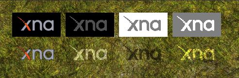

What Is Color Blending?
Color blending mixes two colors together to produce a third color.
The first color is called the source color which is the new color being added. The second color is called the destination color which is the color that already exists (in a render target, for example). Each color has a separate blend factor that determines how much of each color is combined into the final product. Once the source and destination colors have been multiplied by their blend factors, the results are combined according to the specified blend function. The normal blend function is simple addition.
The blend formula looks like this:
(source * sourceBlendFactor) blendFunction (destination*destinationBlendFactor)
The source blend factor is specified by the ColorSourceBlend property, and the destination blend factor is specified by the ColorDestinationBlend property. The ColorBlendFunction property specifies the blend function to use, normally BlendFunction.Add. In that case the formula reduces to this:
(source * sourceBlendFactor) + (destination * destinationBlendFactor)
When no blending is done, a source pixel overwrites a destination pixel. When blending, you can create a lot of special effects using the blending properties:
- Blend type
- Blend settings
Alpha Blending
(source × Blend.SourceAlpha) + (destination × Blend.InvSourceAlpha)
Additive Blending
(source × Blend.One) + (destination × Blend.One)
Multiplicative Blending
(source × Blend.Zero) + (destination × Blend.SourceColor)
2X Multiplicative Blending
(source × Blend.DestinationColor) + (destination × Blend.SourceColor)
Figure 1. This picture illustrates four common blend modes. From left to right: Alpha blending, Additive blending, Multiplicative blending, and 2X Multiplicative blending. The top image in each column is the source image and below, it's effect when added to the destination.

Alpha blending uses the alpha channel of the source color to create a transparency effect so that the destination color appears through the source color. For example, if you clear your backbuffer to Color.Gray, it will be colored (0.5,0.5,0.5,1). If you then take a white color with a partial alpha value (1,1,1,0.4), the result will be 60 percent of the destination color and 40 percent of the source: (0.5 x 0.6) + (1 x 0.4). The resulting color will be (0.7,0.7,0.7, 1). The alpha values are multiplied as well - (.6 x 1) + .4 gives us an alpha value of 1.
When drawing a sprite using the SpriteBatch class, choose BlendState.AlphaBlend to configure alpha blending.
By default, the alpha channel is blended along with the red, green, and blue channels using the ColorSourceBlend and ColorDestinationBlend properties. You can choose to customize the blending for just the alpha channel by using the AlphaSourceBlend and AlphaDestinationBlend properties.
See Also
Concepts
What Is a Sprite?
3D Pipeline Basics
© 2012 Microsoft Corporation. All rights reserved.
© 2023 The MonoGame Foundation.